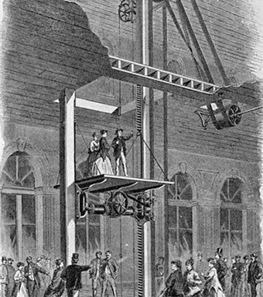

Asansörün Tarihçesi
19. yüzyılda bazı maden ocakları ve fabrikalarda, kömür ve gerekli maddelerin taşınmasında yük asansörleri kullanılıyordu.
İnsanların can güvenliğini tehlikeye atmayan ilk asansörler 19. yüzyıl ortalarında yapıldı.
Bu döneme kadar kentlerdeki yapılar insanların merdivenle yukarı çıkabileceği yükseklikte, en çok beş altı katlı yapılıyordu.
Bu güvenli asansörler buhar gücü ile çalışıyordu. Bu asansörlerde buhar makinesi bir tamburu döndürüyor, asansör kabinini çeken halat
da tıpkı makaralı balık oltalarında olduğu gibi bu tamburun üzerine sarılıyordu. Asansörü Elisha Graves Otis icat etmiştir.